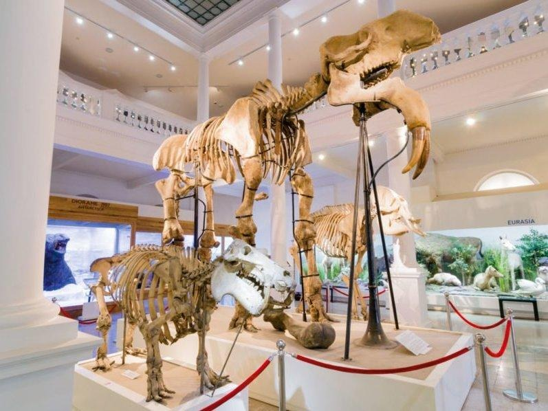
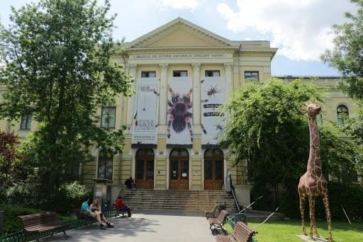
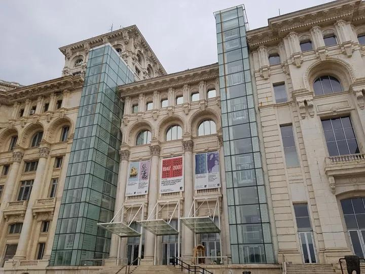
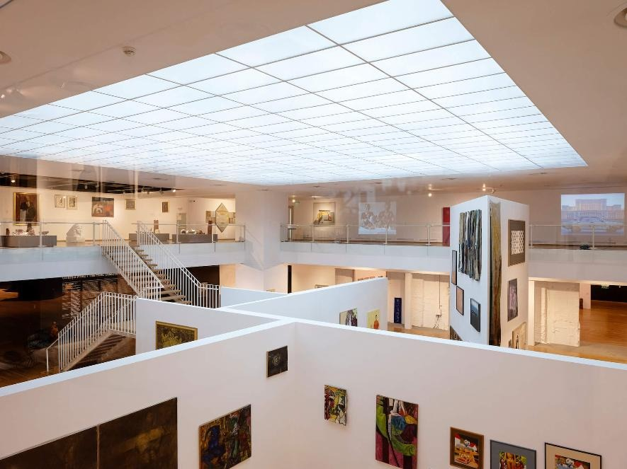
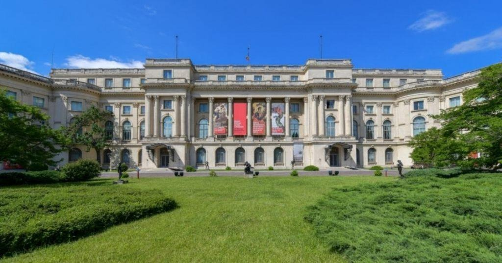
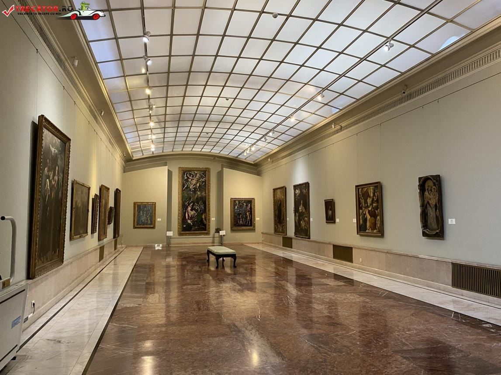
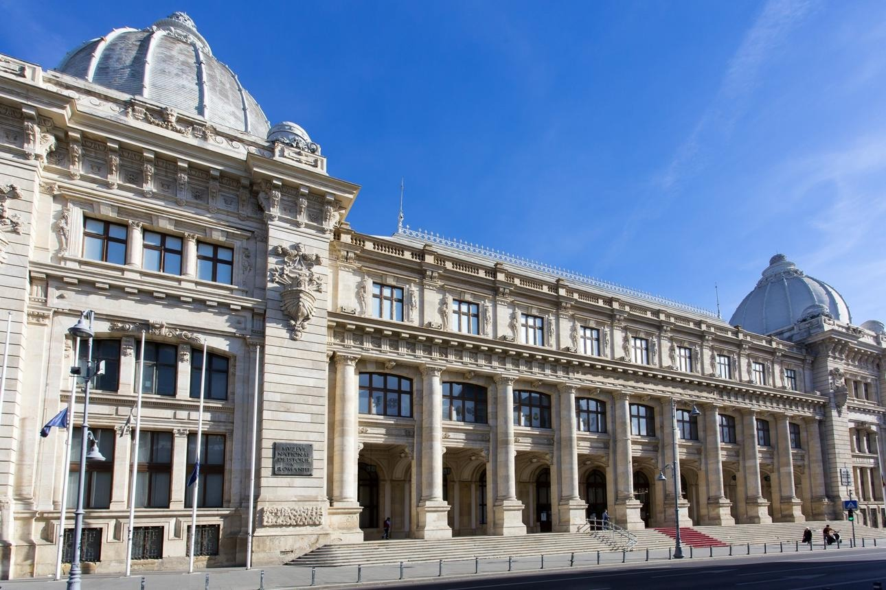
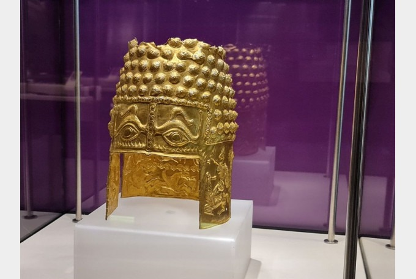

Muzee din București pe care le poți vizita cu buget de student
Atunci când ne gândim la ieșiri prin București, de cele mai multe ori alegem o cafenea, o plimbare pe Calea Victoriei sau o zi petrecută prin mall. Totuși, există și alte locuri interesante care merită descoperite, mai ales atunci când vrei să faci ceva diferit fără să cheltuiești foarte mult.
Multe muzee din București oferă reduceri pentru studenți, iar unele dintre ele sunt surprinzător de interesante, moderne și perfecte pentru o ieșire de weekend.
Muzeul Național de Istorie Naturală Grigore Antipa


Muzeul Antipa este unul dintre cele mai populare muzee din București și o alegere perfectă pentru o ieșire relaxată de weekend. Expozițiile sunt interactive și foarte bine organizate, iar atmosfera face vizita interesantă chiar și pentru cei care nu sunt pasionați de muzeele clasice.
Aici poți vedea animale exotice, schelete impresionante și multe expoziții despre natură și evoluție. Este un loc potrivit atât pentru o vizită cu prietenii, cât și pentru câteva ore petrecute într-un mod diferit și interesant.
Preț bilet student: aproximativ 7 leiMuzeul Național de Artă Contemporană


Muzeul Național de Artă Contemporană este locul perfect pentru cei care vor să descopere ceva diferit și modern. Expozițiile sunt creative, iar atmosfera muzeului este complet diferită față de cea a muzeelor clasice.
Unul dintre cele mai apreciate locuri este terasa muzeului, de unde poți vedea o panoramă foarte frumoasă asupra orașului. Este un spațiu ideal pentru fotografii și pentru o ieșire mai relaxată în weekend.
Preț bilet student: 9 leiMuzeul Național de Artă al României


Situat pe Calea Victoriei, Muzeul Național de Artă al României este unul dintre cele mai elegante muzee din București. Clădirea impresionantă și colecțiile de artă creează o atmosferă liniștită și relaxantă, perfectă pentru un weekend mai calm.
Muzeul găzduiește picturi, sculpturi și expoziții variate, fiind un loc ideal pentru cei pasionați de artă și cultură.
Preț bilet student: 6 leiMuzeul Național de Istorie a României


Situat chiar pe Calea Victoriei, Muzeul Național de Istorie a României este unul dintre cele mai interesante locuri din București pentru cei pasionați de istorie și cultură. Muzeul impresionează atât prin clădirea elegantă, cât și prin colecțiile sale care prezintă diferite perioade importante din istoria României.
Aici poți descoperi obiecte istorice, bijuterii, monede vechi și artefacte foarte bine păstrate. Una dintre cele mai cunoscute atracții este copia Columnei lui Traian, dar și zona dedicată Tezaurului Istoric al României, unde sunt expuse obiecte valoroase și spectaculoase.
Muzeul este o alegere foarte bună pentru o ieșire liniștită de weekend, mai ales datorită locației sale centrale. După vizită, poți continua plimbarea pe Calea Victoriei sau prin Centrul Vechi.
Preț bilet student: 8 lei
Lasă un comentariu